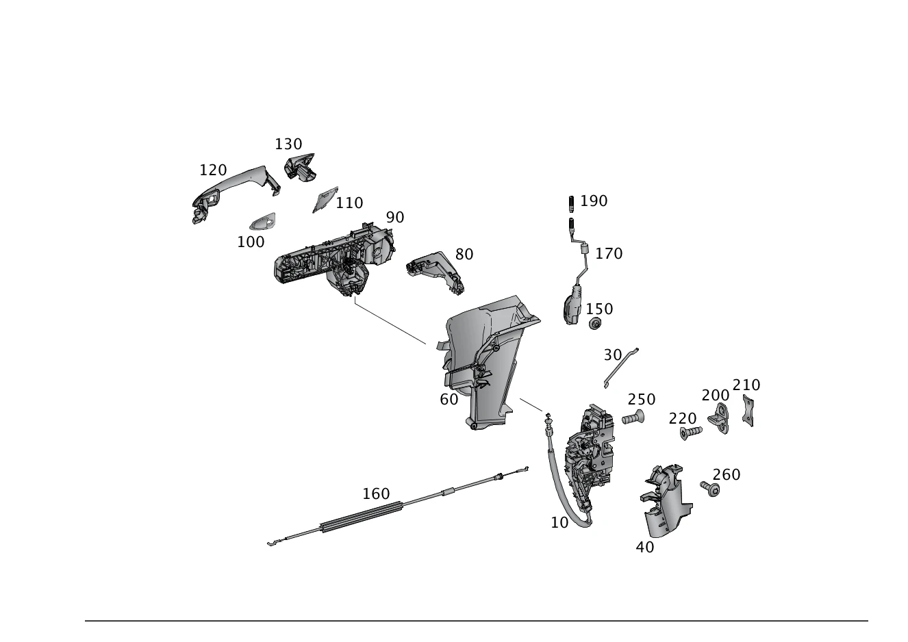

| № | Артикул | Название | Кол. | Примечание | Ограничение |
|---|---|---|---|---|---|
| 10 | A 204 720 27 35 | Замок двери (TUERSCHLOSS) | 1 | Слева Рулевое управление: Влево | |
| 10 | A 204 720 30 35 | Замок двери (TUERSCHLOSS) | 1 | Справа Рулевое управление: Влево | |
| 10 | A 204 720 29 35 | Замок двери (TUERSCHLOSS) | 1 | Слева Рулевое управление: Вправо | -885 |
| 10 | A 204 720 28 35 | Замок двери (TUERSCHLOSS) | 1 | Справа Рулевое управление: Вправо | -885 |
| 10 | A 204 720 37 35 | Замок двери (TUERSCHLOSS) | 1 | Слева Рулевое управление: Вправо | 885 |
| 10 | A 204 720 36 35 | Замок двери (TUERSCHLOSS) | 1 | Справа Рулевое управление: Вправо | 885 |
| 30 | A 172 766 01 39 | Соединительная тяга (VERBINDUNGSSTANGE) | 1 | Слева Рулевое управление: Влево | |
| 30 | A 172 766 01 39 | Соединительная тяга (VERBINDUNGSSTANGE) | 1 | Справа Рулевое управление: Вправо | |
| 40 | A 207 723 03 08 | Крышка (ABDECKUNG) | 1 | Замок двери слева | |
| 40 | A 207 723 04 08 | Крышка (ABDECKUNG) | 1 | Замок двери справа | |
| 60 | A 172 723 01 08 | Крышка (ABDECKUNG) | 1 | Замок двери слева | |
| 60 | A 172 723 02 08 | Крышка (ABDECKUNG) | 1 | Замок двери справа | |
| 80 | A 172 723 01 14 | Держатель (HALTER) | 1 | Дверной замок и опорная дужка слева | |
| 80 | A 172 723 02 14 | Держатель (HALTER) | 1 | Дверной замок и опорная дужка справа | |
| 90 | A 204 760 17 34 | Основание ручки двери (LAGERBUEGEL) | 1 | Слева Рулевое управление: Влево | -889 |
| 90 | A 204 760 25 34 | Основание ручки двери (LAGERBUEGEL) | 1 | Слева Рулевое управление: Вправо | -889 |
| 90 | A 204 760 18 34 | Основание ручки двери (LAGERBUEGEL) | 1 | Справа Рулевое управление: Вправо | -889 |
| 90 | A 204 760 24 34 | Основание ручки двери (LAGERBUEGEL) | 1 | Справа Рулевое управление: Влево | -889 |
| 90 | A 204 760 19 34 | Основание ручки двери (LAGERBUEGEL) | 1 | Слева Рулевое управление: Влево | 889 |
| 90 | A 204 760 28 34 | Основание ручки двери (LAGERBUEGEL) | 1 | Слева Рулевое управление: Вправо | 889 |
| 90 | A 204 760 20 34 | Основание ручки двери (LAGERBUEGEL) | 1 | Справа Рулевое управление: Вправо | 889 |
| 90 | A 204 760 27 34 | Основание ручки двери (LAGERBUEGEL) | 1 | Справа Рулевое управление: Влево | 889 |
| 100 | A 204 766 05 05 | Промежуточная прокладка (ZWISCHENLAGE) | 1 | Ручка двери спереди, слева | |
| 100 | A 204 766 06 05 | Промежуточная прокладка (ZWISCHENLAGE) | 1 | Ручка двери спереди, справа | |
| 110 | A 204 766 07 05 | Промежуточная прокладка (ZWISCHENLAGE) | 1 | Ручка двери сзади, слева | |
| 110 | A 204 766 08 05 | Промежуточная прокладка (ZWISCHENLAGE) | 1 | Ручка двери сзади, справа | |
| 120 | A 204 760 01 70 | Ручка двери | 1 | Слева | -889 |
| 120 | A 204 760 02 70 | Ручка двери | 1 | Справа | -889 |
| 120 | A 204 760 13 70 | Ручка двери (TUERGRIFF) | 1 | СЛЕВА | 889 |
| 120 | A 204 760 14 70 | Ручка двери (TUERGRIFF) | 1 | Справа | 889 |
| 130 | A 204 766 13 25 | Декоративная розетка (ROSETTE) | 1 | Слева Рулевое управление: Влево | -(880/880+889) |
| 130 | A 204 760 03 20 | Крышка (ABDECKUNG) | 1 | Слева Рулевое управление: Вправо | -(880+889) |
| 130 | A 204 766 01 25 | Крышка (ABDECKUNG) | 1 | Слева Рулевое управление: Влево | 880+-889 |
| 130 | A 204 766 05 25 | Крышка | 1 | Слева Рулевое управление: Влево | (802/803/804/805)+880+889 |
| 130 | A 204 760 05 20 | Крышка (ABDECKUNG) | 1 | Слева Рулевое управление: Вправо | 889 |
| 130 | A 204 766 19 25 | Декоративная розетка (ROSETTE) | 1 | Слева Рулевое управление: Влево | (806/807/808/809/800/801)+889 |
| 130 | A 204 760 04 20 | Крышка (ABDECKUNG) | 1 | Справа Рулевое управление: Влево | -889 |
| 130 | A 204 766 14 25 | Декоративная розетка | 1 | Справа Рулевое управление: Вправо | -880 |
| 130 | A 204 766 02 25 | Крышка (ABDECKUNG) | 1 | Справа Рулевое управление: Вправо | 880+-889 |
| 130 | A 204 760 06 20 | Крышка | 1 | Справа Рулевое управление: Влево | 880+889 |
| 130 | A 204 760 06 20 | Крышка | 1 | Справа Рулевое управление: Влево | 889 |
| 130 | A 204 766 06 25 | Крышка | 1 | Справа Рулевое управление: Вправо | 880+889+(802/803/804/805) |
| 130 | A 204 766 20 25 | Декоративная розетка | 1 | Справа Рулевое управление: Вправо | 889+(806/807/808/809/800/801) |
| 150 | A 001 998 51 50 | Пробка (VERSCHLUSSSTOPFEN) | 1 | Отверстие доступа к замку 10mm; 10 MM | |
| 150 | A 001 998 51 50 | Пробка (VERSCHLUSSSTOPFEN) | 1 | Отверстие доступа к замку 10mm; 10 MM | |
| 160 | A 172 760 00 04 | Трос (SEILZUG) | 1 | Слева | |
| 160 | A 172 760 00 04 | Трос (SEILZUG) | 1 | Справа | |
| 170 | A 172 720 01 93 | Блокирующая тяга (SICHERUNGSSTANGE) | 1 | Слева | |
| 170 | A 172 720 02 93 | Блокирующая тяга (SICHERUNGSSTANGE) | 1 | Справа | |
| 190 | A 123 766 00 22 | - Стопорный штифт | 1 | Слева | |
| 190 | A 123 766 00 22 | - Стопорный штифт | 1 | Справа | |
| 200 | A 207 720 01 04 | Скоба замка (SCHLIESSOESE) | 1 | Слева | |
| 200 | A 207 720 01 04 | Скоба замка (SCHLIESSOESE) | 1 | Справа | |
| 210 | A 204 723 01 11 | Пластина (PLATTE) | 1 | Запорная проушина замка слева | |
| 210 | A 204 723 01 11 | Пластина (PLATTE) | 1 | Запорная проушина замка справа | |
| 220 | A 001 990 23 02 | Винт Torx потайной (SENKSCHRAUBE MIT ISR) | 2 | Запорная проушина замка к средней стойке слева; M8X25 | |
| 220 | A 001 990 23 02 | Винт Torx потайной (SENKSCHRAUBE MIT ISR) | 2 | Запорная проушина замка к средней стойке справа; M8X25 | |
| 250 | A 001 990 17 02 | Винт Torx полупотай (LINSENSENKSCHRAUBE M. ISR) | 3 | Замок двери к двери слева | |
| 250 | A 001 990 17 02 | Винт Torx полупотай (LINSENSENKSCHRAUBE M. ISR) | 3 | Замок двери к двери справа | |
| 260 | A 001 984 64 29 | Болт с головкой торкс (SECHSRUNDSCHRAUBE) | 2 | Крепление облицовки слева; 5X16 | |
| 260 | A 001 984 64 29 | Болт с головкой торкс (SECHSRUNDSCHRAUBE) | 2 | Крепление облицовки справа; 5X16 | |
| 400 | A 212 766 70 06 | Ключ | 2 | Электронный, незапрограммированный ES2: 9999 [429] ДЕТАЛЬ, СВЯЗАННАЯ С ПРОТИВОУГОННОЙ БЕЗОПАСНОСТЬЮ [001466] ПРИ ЗАКАЗЕ ОБЯЗАТЕЛЬНО ПОЛНОСТЬЮ ЗАПОЛНИТЬ БЛАНК И АРХИВИРОВАТЬ."ЗАКАЗ ЗАПАСНОГО КЛЮЧА/ДЕТАЛЕЙ ЗАМКА" ПРИ ВОЗМОЖНЫХ ЗАПРОСАХ УГОЛОВНОЙ ПОЛИЦИИ В ЛЮБОЙ МОМЕНТ ВРЕМЕНИ СЛЕДУЕТ ПРЕДОСТАВИТЬ ПОДТВЕРЖДЕНИЕ. | (802/803/804/805) |
| 400 | A 204 905 08 04 | Ключ | 2 | Электронный, незапрограммированный ES2: 9999 [429] ДЕТАЛЬ, СВЯЗАННАЯ С ПРОТИВОУГОННОЙ БЕЗОПАСНОСТЬЮ [001466] ПРИ ЗАКАЗЕ ОБЯЗАТЕЛЬНО ПОЛНОСТЬЮ ЗАПОЛНИТЬ БЛАНК И АРХИВИРОВАТЬ."ЗАКАЗ ЗАПАСНОГО КЛЮЧА/ДЕТАЛЕЙ ЗАМКА" ПРИ ВОЗМОЖНЫХ ЗАПРОСАХ УГОЛОВНОЙ ПОЛИЦИИ В ЛЮБОЙ МОМЕНТ ВРЕМЕНИ СЛЕДУЕТ ПРЕДОСТАВИТЬ ПОДТВЕРЖДЕНИЕ. | (802/803/804/805) |
| 400 | A 231 905 43 00 | Ключ | 2 | Электронный, незапрограммированный ES2: 9999 [429] ДЕТАЛЬ, СВЯЗАННАЯ С ПРОТИВОУГОННОЙ БЕЗОПАСНОСТЬЮ [001466] ПРИ ЗАКАЗЕ ОБЯЗАТЕЛЬНО ПОЛНОСТЬЮ ЗАПОЛНИТЬ БЛАНК И АРХИВИРОВАТЬ."ЗАКАЗ ЗАПАСНОГО КЛЮЧА/ДЕТАЛЕЙ ЗАМКА" ПРИ ВОЗМОЖНЫХ ЗАПРОСАХ УГОЛОВНОЙ ПОЛИЦИИ В ЛЮБОЙ МОМЕНТ ВРЕМЕНИ СЛЕДУЕТ ПРЕДОСТАВИТЬ ПОДТВЕРЖДЕНИЕ. [002890] НА А/М С FBS4 ДЛЯ ПРОГРАММИРОВАНИЯ ДОПОЛНИТ. ИЛИ ЗАМЕНЯЮЩЕГО КЛЮЧА FBS4 ИСПОЛЬЗОВАТЬ XENTRY DIAGNOSTICS, ВЫБРАВ"ДОПОЛНИТЕЛЬНЫЙ КЛЮЧ ЗАПРОГРАММИРОВАТЬ И ИНИЦИАЛИЗИРОВАТЬ" ИЛИ "ЗАМЕНЯЮЩИЙ КЛЮЧ ЗАПРОГРАММИРОВАТЬ И ИНИЦИАЛИЗИРОВАТЬ" | -(802/803/804/805) |
| 400 | A 212 766 70 06 | Ключ | 2 | Электронный, запрограммированный [429] ДЕТАЛЬ, СВЯЗАННАЯ С ПРОТИВОУГОННОЙ БЕЗОПАСНОСТЬЮ [001235] ВНИМАНИЕ ! ПРИ ЗАКАЗЕ ЗАП. КЛЮЧА ES-2: УКАЗАТЬ 0041. [001236] ВНИМАНИЕ ! ПРИ ЗАКАЗЕ ЗАП. КЛЮЧА СЛЕДУЕТ УКАЗАТЬ ES-2 СЧИТАТЬ ДАННЫЕ ИЗ А/М [001466] ПРИ ЗАКАЗЕ ОБЯЗАТЕЛЬНО ПОЛНОСТЬЮ ЗАПОЛНИТЬ БЛАНК И АРХИВИРОВАТЬ."ЗАКАЗ ЗАПАСНОГО КЛЮЧА/ДЕТАЛЕЙ ЗАМКА" ПРИ ВОЗМОЖНЫХ ЗАПРОСАХ УГОЛОВНОЙ ПОЛИЦИИ В ЛЮБОЙ МОМЕНТ ВРЕМЕНИ СЛЕДУЕТ ПРЕДОСТАВИТЬ ПОДТВЕРЖДЕНИЕ. | (802/803/804/805) |
| 400 | A 204 905 08 04 | Ключ | 2 | Электронный, запрограммированный [429] ДЕТАЛЬ, СВЯЗАННАЯ С ПРОТИВОУГОННОЙ БЕЗОПАСНОСТЬЮ [001235] ВНИМАНИЕ ! ПРИ ЗАКАЗЕ ЗАП. КЛЮЧА ES-2: УКАЗАТЬ 0041. [001236] ВНИМАНИЕ ! ПРИ ЗАКАЗЕ ЗАП. КЛЮЧА СЛЕДУЕТ УКАЗАТЬ ES-2 СЧИТАТЬ ДАННЫЕ ИЗ А/М [001466] ПРИ ЗАКАЗЕ ОБЯЗАТЕЛЬНО ПОЛНОСТЬЮ ЗАПОЛНИТЬ БЛАНК И АРХИВИРОВАТЬ."ЗАКАЗ ЗАПАСНОГО КЛЮЧА/ДЕТАЛЕЙ ЗАМКА" ПРИ ВОЗМОЖНЫХ ЗАПРОСАХ УГОЛОВНОЙ ПОЛИЦИИ В ЛЮБОЙ МОМЕНТ ВРЕМЕНИ СЛЕДУЕТ ПРЕДОСТАВИТЬ ПОДТВЕРЖДЕНИЕ. | (802/803/804/805) |
| 400 | A 231 905 43 00 | Ключ | 2 | Электронный, запрограммированный [429] ДЕТАЛЬ, СВЯЗАННАЯ С ПРОТИВОУГОННОЙ БЕЗОПАСНОСТЬЮ [001236] ВНИМАНИЕ ! ПРИ ЗАКАЗЕ ЗАП. КЛЮЧА СЛЕДУЕТ УКАЗАТЬ ES-2 СЧИТАТЬ ДАННЫЕ ИЗ А/М [001466] ПРИ ЗАКАЗЕ ОБЯЗАТЕЛЬНО ПОЛНОСТЬЮ ЗАПОЛНИТЬ БЛАНК И АРХИВИРОВАТЬ."ЗАКАЗ ЗАПАСНОГО КЛЮЧА/ДЕТАЛЕЙ ЗАМКА" ПРИ ВОЗМОЖНЫХ ЗАПРОСАХ УГОЛОВНОЙ ПОЛИЦИИ В ЛЮБОЙ МОМЕНТ ВРЕМЕНИ СЛЕДУЕТ ПРЕДОСТАВИТЬ ПОДТВЕРЖДЕНИЕ. [002889] НА А/М С FBS4 ПЕРЕД ЗАКАЗОМ ОБЯЗАТЕЛЬНО С ПОМОЩЬЮ XENTRY DIAGNOSTICS ВЫПОЛНИТЬ СЛЕДУЮЩУЮ КОМАНДУ: "ЗАРЕГИСТРИРОВАТЬ А/МДЛЯ ЗАК АЗА ЗАПРОГРАММИРОВАННОГО КЛЮЧА" | -(802/803/804/805) |
| 400 | A 212 766 71 06 | Ключ | 2 | Электронный, незапрограммированный ES2: 9999 [429] ДЕТАЛЬ, СВЯЗАННАЯ С ПРОТИВОУГОННОЙ БЕЗОПАСНОСТЬЮ [001466] ПРИ ЗАКАЗЕ ОБЯЗАТЕЛЬНО ПОЛНОСТЬЮ ЗАПОЛНИТЬ БЛАНК И АРХИВИРОВАТЬ."ЗАКАЗ ЗАПАСНОГО КЛЮЧА/ДЕТАЛЕЙ ЗАМКА" ПРИ ВОЗМОЖНЫХ ЗАПРОСАХ УГОЛОВНОЙ ПОЛИЦИИ В ЛЮБОЙ МОМЕНТ ВРЕМЕНИ СЛЕДУЕТ ПРЕДОСТАВИТЬ ПОДТВЕРЖДЕНИЕ. | (802/803/804/805)+(494/763/460+551) |
| 400 | A 204 905 11 04 | Ключ | 2 | Электронный, незапрограммированный ES2: 9999 [429] ДЕТАЛЬ, СВЯЗАННАЯ С ПРОТИВОУГОННОЙ БЕЗОПАСНОСТЬЮ [001466] ПРИ ЗАКАЗЕ ОБЯЗАТЕЛЬНО ПОЛНОСТЬЮ ЗАПОЛНИТЬ БЛАНК И АРХИВИРОВАТЬ."ЗАКАЗ ЗАПАСНОГО КЛЮЧА/ДЕТАЛЕЙ ЗАМКА" ПРИ ВОЗМОЖНЫХ ЗАПРОСАХ УГОЛОВНОЙ ПОЛИЦИИ В ЛЮБОЙ МОМЕНТ ВРЕМЕНИ СЛЕДУЕТ ПРЕДОСТАВИТЬ ПОДТВЕРЖДЕНИЕ. | (802/803/804/805)+(494/763/460+551) |
| 400 | A 231 905 46 00 | Ключ | 2 | Электронный, незапрограммированный ES2: 9999 [429] ДЕТАЛЬ, СВЯЗАННАЯ С ПРОТИВОУГОННОЙ БЕЗОПАСНОСТЬЮ [001466] ПРИ ЗАКАЗЕ ОБЯЗАТЕЛЬНО ПОЛНОСТЬЮ ЗАПОЛНИТЬ БЛАНК И АРХИВИРОВАТЬ."ЗАКАЗ ЗАПАСНОГО КЛЮЧА/ДЕТАЛЕЙ ЗАМКА" ПРИ ВОЗМОЖНЫХ ЗАПРОСАХ УГОЛОВНОЙ ПОЛИЦИИ В ЛЮБОЙ МОМЕНТ ВРЕМЕНИ СЛЕДУЕТ ПРЕДОСТАВИТЬ ПОДТВЕРЖДЕНИЕ. [002890] НА А/М С FBS4 ДЛЯ ПРОГРАММИРОВАНИЯ ДОПОЛНИТ. ИЛИ ЗАМЕНЯЮЩЕГО КЛЮЧА FBS4 ИСПОЛЬЗОВАТЬ XENTRY DIAGNOSTICS, ВЫБРАВ"ДОПОЛНИТЕЛЬНЫЙ КЛЮЧ ЗАПРОГРАММИРОВАТЬ И ИНИЦИАЛИЗИРОВАТЬ" ИЛИ "ЗАМЕНЯЮЩИЙ КЛЮЧ ЗАПРОГРАММИРОВАТЬ И ИНИЦИАЛИЗИРОВАТЬ" | (494/763/460+551)+-(802/803/804/805) |
| 400 | A 212 766 71 06 | Ключ | 2 | Электронный, запрограммированный [429] ДЕТАЛЬ, СВЯЗАННАЯ С ПРОТИВОУГОННОЙ БЕЗОПАСНОСТЬЮ [001235] ВНИМАНИЕ ! ПРИ ЗАКАЗЕ ЗАП. КЛЮЧА ES-2: УКАЗАТЬ 0041. [001236] ВНИМАНИЕ ! ПРИ ЗАКАЗЕ ЗАП. КЛЮЧА СЛЕДУЕТ УКАЗАТЬ ES-2 СЧИТАТЬ ДАННЫЕ ИЗ А/М [001466] ПРИ ЗАКАЗЕ ОБЯЗАТЕЛЬНО ПОЛНОСТЬЮ ЗАПОЛНИТЬ БЛАНК И АРХИВИРОВАТЬ."ЗАКАЗ ЗАПАСНОГО КЛЮЧА/ДЕТАЛЕЙ ЗАМКА" ПРИ ВОЗМОЖНЫХ ЗАПРОСАХ УГОЛОВНОЙ ПОЛИЦИИ В ЛЮБОЙ МОМЕНТ ВРЕМЕНИ СЛЕДУЕТ ПРЕДОСТАВИТЬ ПОДТВЕРЖДЕНИЕ. | (802/803/804/805)+(494/763/460+551) |
| 400 | A 204 905 11 04 | Ключ | 2 | Электронный, запрограммированный [429] ДЕТАЛЬ, СВЯЗАННАЯ С ПРОТИВОУГОННОЙ БЕЗОПАСНОСТЬЮ [001235] ВНИМАНИЕ ! ПРИ ЗАКАЗЕ ЗАП. КЛЮЧА ES-2: УКАЗАТЬ 0041. [001236] ВНИМАНИЕ ! ПРИ ЗАКАЗЕ ЗАП. КЛЮЧА СЛЕДУЕТ УКАЗАТЬ ES-2 СЧИТАТЬ ДАННЫЕ ИЗ А/М [001466] ПРИ ЗАКАЗЕ ОБЯЗАТЕЛЬНО ПОЛНОСТЬЮ ЗАПОЛНИТЬ БЛАНК И АРХИВИРОВАТЬ."ЗАКАЗ ЗАПАСНОГО КЛЮЧА/ДЕТАЛЕЙ ЗАМКА" ПРИ ВОЗМОЖНЫХ ЗАПРОСАХ УГОЛОВНОЙ ПОЛИЦИИ В ЛЮБОЙ МОМЕНТ ВРЕМЕНИ СЛЕДУЕТ ПРЕДОСТАВИТЬ ПОДТВЕРЖДЕНИЕ. | (802/803/804/805)+(494/763/460+551) |
| 400 | A 231 905 46 00 | Ключ | 2 | Электронный, запрограммированный [429] ДЕТАЛЬ, СВЯЗАННАЯ С ПРОТИВОУГОННОЙ БЕЗОПАСНОСТЬЮ [001236] ВНИМАНИЕ ! ПРИ ЗАКАЗЕ ЗАП. КЛЮЧА СЛЕДУЕТ УКАЗАТЬ ES-2 СЧИТАТЬ ДАННЫЕ ИЗ А/М [001466] ПРИ ЗАКАЗЕ ОБЯЗАТЕЛЬНО ПОЛНОСТЬЮ ЗАПОЛНИТЬ БЛАНК И АРХИВИРОВАТЬ."ЗАКАЗ ЗАПАСНОГО КЛЮЧА/ДЕТАЛЕЙ ЗАМКА" ПРИ ВОЗМОЖНЫХ ЗАПРОСАХ УГОЛОВНОЙ ПОЛИЦИИ В ЛЮБОЙ МОМЕНТ ВРЕМЕНИ СЛЕДУЕТ ПРЕДОСТАВИТЬ ПОДТВЕРЖДЕНИЕ. [002889] НА А/М С FBS4 ПЕРЕД ЗАКАЗОМ ОБЯЗАТЕЛЬНО С ПОМОЩЬЮ XENTRY DIAGNOSTICS ВЫПОЛНИТЬ СЛЕДУЮЩУЮ КОМАНДУ: "ЗАРЕГИСТРИРОВАТЬ А/МДЛЯ ЗАК АЗА ЗАПРОГРАММИРОВАННОГО КЛЮЧА" | (494/763/460+551)+-(802/803/804/805) |
| 400 | A 212 766 72 06 | Ключ | 2 | Электронный, незапрограммированный ES2: 9999 [429] ДЕТАЛЬ, СВЯЗАННАЯ С ПРОТИВОУГОННОЙ БЕЗОПАСНОСТЬЮ [001466] ПРИ ЗАКАЗЕ ОБЯЗАТЕЛЬНО ПОЛНОСТЬЮ ЗАПОЛНИТЬ БЛАНК И АРХИВИРОВАТЬ."ЗАКАЗ ЗАПАСНОГО КЛЮЧА/ДЕТАЛЕЙ ЗАМКА" ПРИ ВОЗМОЖНЫХ ЗАПРОСАХ УГОЛОВНОЙ ПОЛИЦИИ В ЛЮБОЙ МОМЕНТ ВРЕМЕНИ СЛЕДУЕТ ПРЕДОСТАВИТЬ ПОДТВЕРЖДЕНИЕ. | (802/803/804/805)+(762/460) |
| 400 | A 204 905 14 04 | Ключ | 2 | Электронный, незапрограммированный ES2: 9999 [429] ДЕТАЛЬ, СВЯЗАННАЯ С ПРОТИВОУГОННОЙ БЕЗОПАСНОСТЬЮ [001466] ПРИ ЗАКАЗЕ ОБЯЗАТЕЛЬНО ПОЛНОСТЬЮ ЗАПОЛНИТЬ БЛАНК И АРХИВИРОВАТЬ."ЗАКАЗ ЗАПАСНОГО КЛЮЧА/ДЕТАЛЕЙ ЗАМКА" ПРИ ВОЗМОЖНЫХ ЗАПРОСАХ УГОЛОВНОЙ ПОЛИЦИИ В ЛЮБОЙ МОМЕНТ ВРЕМЕНИ СЛЕДУЕТ ПРЕДОСТАВИТЬ ПОДТВЕРЖДЕНИЕ. | (802/803/804/805)+(762/460) |
| 400 | A 231 905 49 00 | Ключ | 2 | Электронный, незапрограммированный ES2: 9999 [429] ДЕТАЛЬ, СВЯЗАННАЯ С ПРОТИВОУГОННОЙ БЕЗОПАСНОСТЬЮ [001466] ПРИ ЗАКАЗЕ ОБЯЗАТЕЛЬНО ПОЛНОСТЬЮ ЗАПОЛНИТЬ БЛАНК И АРХИВИРОВАТЬ."ЗАКАЗ ЗАПАСНОГО КЛЮЧА/ДЕТАЛЕЙ ЗАМКА" ПРИ ВОЗМОЖНЫХ ЗАПРОСАХ УГОЛОВНОЙ ПОЛИЦИИ В ЛЮБОЙ МОМЕНТ ВРЕМЕНИ СЛЕДУЕТ ПРЕДОСТАВИТЬ ПОДТВЕРЖДЕНИЕ. [002890] НА А/М С FBS4 ДЛЯ ПРОГРАММИРОВАНИЯ ДОПОЛНИТ. ИЛИ ЗАМЕНЯЮЩЕГО КЛЮЧА FBS4 ИСПОЛЬЗОВАТЬ XENTRY DIAGNOSTICS, ВЫБРАВ"ДОПОЛНИТЕЛЬНЫЙ КЛЮЧ ЗАПРОГРАММИРОВАТЬ И ИНИЦИАЛИЗИРОВАТЬ" ИЛИ "ЗАМЕНЯЮЩИЙ КЛЮЧ ЗАПРОГРАММИРОВАТЬ И ИНИЦИАЛИЗИРОВАТЬ" | (762/460)+-(802/803/804/805) |
| 400 | A 212 766 72 06 | Ключ | 2 | Электронный, запрограммированный [429] ДЕТАЛЬ, СВЯЗАННАЯ С ПРОТИВОУГОННОЙ БЕЗОПАСНОСТЬЮ [001235] ВНИМАНИЕ ! ПРИ ЗАКАЗЕ ЗАП. КЛЮЧА ES-2: УКАЗАТЬ 0041. [001236] ВНИМАНИЕ ! ПРИ ЗАКАЗЕ ЗАП. КЛЮЧА СЛЕДУЕТ УКАЗАТЬ ES-2 СЧИТАТЬ ДАННЫЕ ИЗ А/М [001466] ПРИ ЗАКАЗЕ ОБЯЗАТЕЛЬНО ПОЛНОСТЬЮ ЗАПОЛНИТЬ БЛАНК И АРХИВИРОВАТЬ."ЗАКАЗ ЗАПАСНОГО КЛЮЧА/ДЕТАЛЕЙ ЗАМКА" ПРИ ВОЗМОЖНЫХ ЗАПРОСАХ УГОЛОВНОЙ ПОЛИЦИИ В ЛЮБОЙ МОМЕНТ ВРЕМЕНИ СЛЕДУЕТ ПРЕДОСТАВИТЬ ПОДТВЕРЖДЕНИЕ. | (802/803/804/805)+(762/460) |
| 400 | A 204 905 14 04 | Ключ | 2 | Электронный, запрограммированный [429] ДЕТАЛЬ, СВЯЗАННАЯ С ПРОТИВОУГОННОЙ БЕЗОПАСНОСТЬЮ [001235] ВНИМАНИЕ ! ПРИ ЗАКАЗЕ ЗАП. КЛЮЧА ES-2: УКАЗАТЬ 0041. [001236] ВНИМАНИЕ ! ПРИ ЗАКАЗЕ ЗАП. КЛЮЧА СЛЕДУЕТ УКАЗАТЬ ES-2 СЧИТАТЬ ДАННЫЕ ИЗ А/М [001466] ПРИ ЗАКАЗЕ ОБЯЗАТЕЛЬНО ПОЛНОСТЬЮ ЗАПОЛНИТЬ БЛАНК И АРХИВИРОВАТЬ."ЗАКАЗ ЗАПАСНОГО КЛЮЧА/ДЕТАЛЕЙ ЗАМКА" ПРИ ВОЗМОЖНЫХ ЗАПРОСАХ УГОЛОВНОЙ ПОЛИЦИИ В ЛЮБОЙ МОМЕНТ ВРЕМЕНИ СЛЕДУЕТ ПРЕДОСТАВИТЬ ПОДТВЕРЖДЕНИЕ. | (802/803/804/805)+(762/460) |
| 400 | A 231 905 49 00 | Ключ | 2 | Электронный, запрограммированный [429] ДЕТАЛЬ, СВЯЗАННАЯ С ПРОТИВОУГОННОЙ БЕЗОПАСНОСТЬЮ [001236] ВНИМАНИЕ ! ПРИ ЗАКАЗЕ ЗАП. КЛЮЧА СЛЕДУЕТ УКАЗАТЬ ES-2 СЧИТАТЬ ДАННЫЕ ИЗ А/М [001466] ПРИ ЗАКАЗЕ ОБЯЗАТЕЛЬНО ПОЛНОСТЬЮ ЗАПОЛНИТЬ БЛАНК И АРХИВИРОВАТЬ."ЗАКАЗ ЗАПАСНОГО КЛЮЧА/ДЕТАЛЕЙ ЗАМКА" ПРИ ВОЗМОЖНЫХ ЗАПРОСАХ УГОЛОВНОЙ ПОЛИЦИИ В ЛЮБОЙ МОМЕНТ ВРЕМЕНИ СЛЕДУЕТ ПРЕДОСТАВИТЬ ПОДТВЕРЖДЕНИЕ. [002889] НА А/М С FBS4 ПЕРЕД ЗАКАЗОМ ОБЯЗАТЕЛЬНО С ПОМОЩЬЮ XENTRY DIAGNOSTICS ВЫПОЛНИТЬ СЛЕДУЮЩУЮ КОМАНДУ: "ЗАРЕГИСТРИРОВАТЬ А/МДЛЯ ЗАК АЗА ЗАПРОГРАММИРОВАННОГО КЛЮЧА" | (762/460)+-(802/803/804/805) |
| 400 | A 204 905 59 02 | Ключ | 2 | Электронный, незапрограммированный ES2: 9999 [429] ДЕТАЛЬ, СВЯЗАННАЯ С ПРОТИВОУГОННОЙ БЕЗОПАСНОСТЬЮ [001466] ПРИ ЗАКАЗЕ ОБЯЗАТЕЛЬНО ПОЛНОСТЬЮ ЗАПОЛНИТЬ БЛАНК И АРХИВИРОВАТЬ."ЗАКАЗ ЗАПАСНОГО КЛЮЧА/ДЕТАЛЕЙ ЗАМКА" ПРИ ВОЗМОЖНЫХ ЗАПРОСАХ УГОЛОВНОЙ ПОЛИЦИИ В ЛЮБОЙ МОМЕНТ ВРЕМЕНИ СЛЕДУЕТ ПРЕДОСТАВИТЬ ПОДТВЕРЖДЕНИЕ. | (802/803/804/805)+889 |
| 400 | A 222 905 98 04 | Ключ (SCHLUESSEL) | 2 | Электронный, незапрограммированный ES2: 9999 [429] ДЕТАЛЬ, СВЯЗАННАЯ С ПРОТИВОУГОННОЙ БЕЗОПАСНОСТЬЮ [001466] ПРИ ЗАКАЗЕ ОБЯЗАТЕЛЬНО ПОЛНОСТЬЮ ЗАПОЛНИТЬ БЛАНК И АРХИВИРОВАТЬ."ЗАКАЗ ЗАПАСНОГО КЛЮЧА/ДЕТАЛЕЙ ЗАМКА" ПРИ ВОЗМОЖНЫХ ЗАПРОСАХ УГОЛОВНОЙ ПОЛИЦИИ В ЛЮБОЙ МОМЕНТ ВРЕМЕНИ СЛЕДУЕТ ПРЕДОСТАВИТЬ ПОДТВЕРЖДЕНИЕ. [002890] НА А/М С FBS4 ДЛЯ ПРОГРАММИРОВАНИЯ ДОПОЛНИТ. ИЛИ ЗАМЕНЯЮЩЕГО КЛЮЧА FBS4 ИСПОЛЬЗОВАТЬ XENTRY DIAGNOSTICS, ВЫБРАВ"ДОПОЛНИТЕЛЬНЫЙ КЛЮЧ ЗАПРОГРАММИРОВАТЬ И ИНИЦИАЛИЗИРОВАТЬ" ИЛИ "ЗАМЕНЯЮЩИЙ КЛЮЧ ЗАПРОГРАММИРОВАТЬ И ИНИЦИАЛИЗИРОВАТЬ" | 889+-(802/803/804/805) |
| 400 | A 222 905 50 08 | Ключ (SCHLUESSEL) | 2 | Электронный, незапрограммированный ES2: 9999 [429] ДЕТАЛЬ, СВЯЗАННАЯ С ПРОТИВОУГОННОЙ БЕЗОПАСНОСТЬЮ [001466] ПРИ ЗАКАЗЕ ОБЯЗАТЕЛЬНО ПОЛНОСТЬЮ ЗАПОЛНИТЬ БЛАНК И АРХИВИРОВАТЬ."ЗАКАЗ ЗАПАСНОГО КЛЮЧА/ДЕТАЛЕЙ ЗАМКА" ПРИ ВОЗМОЖНЫХ ЗАПРОСАХ УГОЛОВНОЙ ПОЛИЦИИ В ЛЮБОЙ МОМЕНТ ВРЕМЕНИ СЛЕДУЕТ ПРЕДОСТАВИТЬ ПОДТВЕРЖДЕНИЕ. [002890] НА А/М С FBS4 ДЛЯ ПРОГРАММИРОВАНИЯ ДОПОЛНИТ. ИЛИ ЗАМЕНЯЮЩЕГО КЛЮЧА FBS4 ИСПОЛЬЗОВАТЬ XENTRY DIAGNOSTICS, ВЫБРАВ"ДОПОЛНИТЕЛЬНЫЙ КЛЮЧ ЗАПРОГРАММИРОВАТЬ И ИНИЦИАЛИЗИРОВАТЬ" ИЛИ "ЗАМЕНЯЮЩИЙ КЛЮЧ ЗАПРОГРАММИРОВАТЬ И ИНИЦИАЛИЗИРОВАТЬ" | 889+-(802/803/804/805) |
| 400 | A 204 905 59 02 | Ключ | 2 | Электронный, запрограммированный [429] ДЕТАЛЬ, СВЯЗАННАЯ С ПРОТИВОУГОННОЙ БЕЗОПАСНОСТЬЮ [001235] ВНИМАНИЕ ! ПРИ ЗАКАЗЕ ЗАП. КЛЮЧА ES-2: УКАЗАТЬ 0041. [001236] ВНИМАНИЕ ! ПРИ ЗАКАЗЕ ЗАП. КЛЮЧА СЛЕДУЕТ УКАЗАТЬ ES-2 СЧИТАТЬ ДАННЫЕ ИЗ А/М [001466] ПРИ ЗАКАЗЕ ОБЯЗАТЕЛЬНО ПОЛНОСТЬЮ ЗАПОЛНИТЬ БЛАНК И АРХИВИРОВАТЬ."ЗАКАЗ ЗАПАСНОГО КЛЮЧА/ДЕТАЛЕЙ ЗАМКА" ПРИ ВОЗМОЖНЫХ ЗАПРОСАХ УГОЛОВНОЙ ПОЛИЦИИ В ЛЮБОЙ МОМЕНТ ВРЕМЕНИ СЛЕДУЕТ ПРЕДОСТАВИТЬ ПОДТВЕРЖДЕНИЕ. | (802/803/804/805)+889 |
| 400 | A 222 905 98 04 | Ключ (SCHLUESSEL) | 2 | Электронный, запрограммированный [429] ДЕТАЛЬ, СВЯЗАННАЯ С ПРОТИВОУГОННОЙ БЕЗОПАСНОСТЬЮ [001236] ВНИМАНИЕ ! ПРИ ЗАКАЗЕ ЗАП. КЛЮЧА СЛЕДУЕТ УКАЗАТЬ ES-2 СЧИТАТЬ ДАННЫЕ ИЗ А/М [001466] ПРИ ЗАКАЗЕ ОБЯЗАТЕЛЬНО ПОЛНОСТЬЮ ЗАПОЛНИТЬ БЛАНК И АРХИВИРОВАТЬ."ЗАКАЗ ЗАПАСНОГО КЛЮЧА/ДЕТАЛЕЙ ЗАМКА" ПРИ ВОЗМОЖНЫХ ЗАПРОСАХ УГОЛОВНОЙ ПОЛИЦИИ В ЛЮБОЙ МОМЕНТ ВРЕМЕНИ СЛЕДУЕТ ПРЕДОСТАВИТЬ ПОДТВЕРЖДЕНИЕ. [002889] НА А/М С FBS4 ПЕРЕД ЗАКАЗОМ ОБЯЗАТЕЛЬНО С ПОМОЩЬЮ XENTRY DIAGNOSTICS ВЫПОЛНИТЬ СЛЕДУЮЩУЮ КОМАНДУ: "ЗАРЕГИСТРИРОВАТЬ А/МДЛЯ ЗАК АЗА ЗАПРОГРАММИРОВАННОГО КЛЮЧА" | 889+-(802/803/804/805) |
| 400 | A 222 905 50 08 | Ключ (SCHLUESSEL) | 2 | Электронный, запрограммированный [429] ДЕТАЛЬ, СВЯЗАННАЯ С ПРОТИВОУГОННОЙ БЕЗОПАСНОСТЬЮ [001236] ВНИМАНИЕ ! ПРИ ЗАКАЗЕ ЗАП. КЛЮЧА СЛЕДУЕТ УКАЗАТЬ ES-2 СЧИТАТЬ ДАННЫЕ ИЗ А/М [001466] ПРИ ЗАКАЗЕ ОБЯЗАТЕЛЬНО ПОЛНОСТЬЮ ЗАПОЛНИТЬ БЛАНК И АРХИВИРОВАТЬ."ЗАКАЗ ЗАПАСНОГО КЛЮЧА/ДЕТАЛЕЙ ЗАМКА" ПРИ ВОЗМОЖНЫХ ЗАПРОСАХ УГОЛОВНОЙ ПОЛИЦИИ В ЛЮБОЙ МОМЕНТ ВРЕМЕНИ СЛЕДУЕТ ПРЕДОСТАВИТЬ ПОДТВЕРЖДЕНИЕ. [002889] НА А/М С FBS4 ПЕРЕД ЗАКАЗОМ ОБЯЗАТЕЛЬНО С ПОМОЩЬЮ XENTRY DIAGNOSTICS ВЫПОЛНИТЬ СЛЕДУЮЩУЮ КОМАНДУ: "ЗАРЕГИСТРИРОВАТЬ А/МДЛЯ ЗАК АЗА ЗАПРОГРАММИРОВАННОГО КЛЮЧА" | 889+-(802/803/804/805) |
| 400 | A 204 905 62 02 | Ключ | 2 | Электронный, незапрограммированный ES2: 9999 [429] ДЕТАЛЬ, СВЯЗАННАЯ С ПРОТИВОУГОННОЙ БЕЗОПАСНОСТЬЮ [001466] ПРИ ЗАКАЗЕ ОБЯЗАТЕЛЬНО ПОЛНОСТЬЮ ЗАПОЛНИТЬ БЛАНК И АРХИВИРОВАТЬ."ЗАКАЗ ЗАПАСНОГО КЛЮЧА/ДЕТАЛЕЙ ЗАМКА" ПРИ ВОЗМОЖНЫХ ЗАПРОСАХ УГОЛОВНОЙ ПОЛИЦИИ В ЛЮБОЙ МОМЕНТ ВРЕМЕНИ СЛЕДУЕТ ПРЕДОСТАВИТЬ ПОДТВЕРЖДЕНИЕ. | (802/803/804/805)+889+(494/763) |
| 400 | A 222 905 01 05 | Ключ (SCHLUESSEL) | 2 | Электронный, незапрограммированный ES2: 9999 [429] ДЕТАЛЬ, СВЯЗАННАЯ С ПРОТИВОУГОННОЙ БЕЗОПАСНОСТЬЮ [001466] ПРИ ЗАКАЗЕ ОБЯЗАТЕЛЬНО ПОЛНОСТЬЮ ЗАПОЛНИТЬ БЛАНК И АРХИВИРОВАТЬ."ЗАКАЗ ЗАПАСНОГО КЛЮЧА/ДЕТАЛЕЙ ЗАМКА" ПРИ ВОЗМОЖНЫХ ЗАПРОСАХ УГОЛОВНОЙ ПОЛИЦИИ В ЛЮБОЙ МОМЕНТ ВРЕМЕНИ СЛЕДУЕТ ПРЕДОСТАВИТЬ ПОДТВЕРЖДЕНИЕ. [002890] НА А/М С FBS4 ДЛЯ ПРОГРАММИРОВАНИЯ ДОПОЛНИТ. ИЛИ ЗАМЕНЯЮЩЕГО КЛЮЧА FBS4 ИСПОЛЬЗОВАТЬ XENTRY DIAGNOSTICS, ВЫБРАВ"ДОПОЛНИТЕЛЬНЫЙ КЛЮЧ ЗАПРОГРАММИРОВАТЬ И ИНИЦИАЛИЗИРОВАТЬ" ИЛИ "ЗАМЕНЯЮЩИЙ КЛЮЧ ЗАПРОГРАММИРОВАТЬ И ИНИЦИАЛИЗИРОВАТЬ" | (889/893)+(494/763/460+551)+-(802/803/804/805) |
| 400 | A 222 905 51 08 | Ключ (SCHLUESSEL) | 2 | Электронный, незапрограммированный ES2: 9999 [429] ДЕТАЛЬ, СВЯЗАННАЯ С ПРОТИВОУГОННОЙ БЕЗОПАСНОСТЬЮ [001466] ПРИ ЗАКАЗЕ ОБЯЗАТЕЛЬНО ПОЛНОСТЬЮ ЗАПОЛНИТЬ БЛАНК И АРХИВИРОВАТЬ."ЗАКАЗ ЗАПАСНОГО КЛЮЧА/ДЕТАЛЕЙ ЗАМКА" ПРИ ВОЗМОЖНЫХ ЗАПРОСАХ УГОЛОВНОЙ ПОЛИЦИИ В ЛЮБОЙ МОМЕНТ ВРЕМЕНИ СЛЕДУЕТ ПРЕДОСТАВИТЬ ПОДТВЕРЖДЕНИЕ. [002890] НА А/М С FBS4 ДЛЯ ПРОГРАММИРОВАНИЯ ДОПОЛНИТ. ИЛИ ЗАМЕНЯЮЩЕГО КЛЮЧА FBS4 ИСПОЛЬЗОВАТЬ XENTRY DIAGNOSTICS, ВЫБРАВ"ДОПОЛНИТЕЛЬНЫЙ КЛЮЧ ЗАПРОГРАММИРОВАТЬ И ИНИЦИАЛИЗИРОВАТЬ" ИЛИ "ЗАМЕНЯЮЩИЙ КЛЮЧ ЗАПРОГРАММИРОВАТЬ И ИНИЦИАЛИЗИРОВАТЬ" | (889/893)+(494/763/460+551)+-(802/803/804/805) |
| 400 | A 204 905 62 02 | Ключ | 2 | Электронный, запрограммированный [429] ДЕТАЛЬ, СВЯЗАННАЯ С ПРОТИВОУГОННОЙ БЕЗОПАСНОСТЬЮ [001235] ВНИМАНИЕ ! ПРИ ЗАКАЗЕ ЗАП. КЛЮЧА ES-2: УКАЗАТЬ 0041. [001236] ВНИМАНИЕ ! ПРИ ЗАКАЗЕ ЗАП. КЛЮЧА СЛЕДУЕТ УКАЗАТЬ ES-2 СЧИТАТЬ ДАННЫЕ ИЗ А/М [001466] ПРИ ЗАКАЗЕ ОБЯЗАТЕЛЬНО ПОЛНОСТЬЮ ЗАПОЛНИТЬ БЛАНК И АРХИВИРОВАТЬ."ЗАКАЗ ЗАПАСНОГО КЛЮЧА/ДЕТАЛЕЙ ЗАМКА" ПРИ ВОЗМОЖНЫХ ЗАПРОСАХ УГОЛОВНОЙ ПОЛИЦИИ В ЛЮБОЙ МОМЕНТ ВРЕМЕНИ СЛЕДУЕТ ПРЕДОСТАВИТЬ ПОДТВЕРЖДЕНИЕ. | (802/803/804/805)+889+(494/763) |
| 400 | A 222 905 01 05 | Ключ (SCHLUESSEL) | 2 | Электронный, запрограммированный [429] ДЕТАЛЬ, СВЯЗАННАЯ С ПРОТИВОУГОННОЙ БЕЗОПАСНОСТЬЮ [001236] ВНИМАНИЕ ! ПРИ ЗАКАЗЕ ЗАП. КЛЮЧА СЛЕДУЕТ УКАЗАТЬ ES-2 СЧИТАТЬ ДАННЫЕ ИЗ А/М [001466] ПРИ ЗАКАЗЕ ОБЯЗАТЕЛЬНО ПОЛНОСТЬЮ ЗАПОЛНИТЬ БЛАНК И АРХИВИРОВАТЬ."ЗАКАЗ ЗАПАСНОГО КЛЮЧА/ДЕТАЛЕЙ ЗАМКА" ПРИ ВОЗМОЖНЫХ ЗАПРОСАХ УГОЛОВНОЙ ПОЛИЦИИ В ЛЮБОЙ МОМЕНТ ВРЕМЕНИ СЛЕДУЕТ ПРЕДОСТАВИТЬ ПОДТВЕРЖДЕНИЕ. [002889] НА А/М С FBS4 ПЕРЕД ЗАКАЗОМ ОБЯЗАТЕЛЬНО С ПОМОЩЬЮ XENTRY DIAGNOSTICS ВЫПОЛНИТЬ СЛЕДУЮЩУЮ КОМАНДУ: "ЗАРЕГИСТРИРОВАТЬ А/МДЛЯ ЗАК АЗА ЗАПРОГРАММИРОВАННОГО КЛЮЧА" | (889/893)+(494/763/460+551)+-(802/803/804/805) |
| 400 | A 222 905 51 08 | Ключ (SCHLUESSEL) | 2 | Электронный, запрограммированный [429] ДЕТАЛЬ, СВЯЗАННАЯ С ПРОТИВОУГОННОЙ БЕЗОПАСНОСТЬЮ [001236] ВНИМАНИЕ ! ПРИ ЗАКАЗЕ ЗАП. КЛЮЧА СЛЕДУЕТ УКАЗАТЬ ES-2 СЧИТАТЬ ДАННЫЕ ИЗ А/М [001466] ПРИ ЗАКАЗЕ ОБЯЗАТЕЛЬНО ПОЛНОСТЬЮ ЗАПОЛНИТЬ БЛАНК И АРХИВИРОВАТЬ."ЗАКАЗ ЗАПАСНОГО КЛЮЧА/ДЕТАЛЕЙ ЗАМКА" ПРИ ВОЗМОЖНЫХ ЗАПРОСАХ УГОЛОВНОЙ ПОЛИЦИИ В ЛЮБОЙ МОМЕНТ ВРЕМЕНИ СЛЕДУЕТ ПРЕДОСТАВИТЬ ПОДТВЕРЖДЕНИЕ. [002889] НА А/М С FBS4 ПЕРЕД ЗАКАЗОМ ОБЯЗАТЕЛЬНО С ПОМОЩЬЮ XENTRY DIAGNOSTICS ВЫПОЛНИТЬ СЛЕДУЮЩУЮ КОМАНДУ: "ЗАРЕГИСТРИРОВАТЬ А/МДЛЯ ЗАК АЗА ЗАПРОГРАММИРОВАННОГО КЛЮЧА" | (889/893)+(494/763/460+551)+-(802/803/804/805) |
| 400 | A 204 905 65 02 | Ключ | 2 | Электронный, незапрограммированный ES2: 9999 [429] ДЕТАЛЬ, СВЯЗАННАЯ С ПРОТИВОУГОННОЙ БЕЗОПАСНОСТЬЮ [001466] ПРИ ЗАКАЗЕ ОБЯЗАТЕЛЬНО ПОЛНОСТЬЮ ЗАПОЛНИТЬ БЛАНК И АРХИВИРОВАТЬ."ЗАКАЗ ЗАПАСНОГО КЛЮЧА/ДЕТАЛЕЙ ЗАМКА" ПРИ ВОЗМОЖНЫХ ЗАПРОСАХ УГОЛОВНОЙ ПОЛИЦИИ В ЛЮБОЙ МОМЕНТ ВРЕМЕНИ СЛЕДУЕТ ПРЕДОСТАВИТЬ ПОДТВЕРЖДЕНИЕ. | (802/803/804/805)+889+(762/460) |
| 400 | A 222 905 52 08 | Ключ (SCHLUESSEL) | 2 | Электронный, незапрограммированный ES2: 9999 [429] ДЕТАЛЬ, СВЯЗАННАЯ С ПРОТИВОУГОННОЙ БЕЗОПАСНОСТЬЮ [001466] ПРИ ЗАКАЗЕ ОБЯЗАТЕЛЬНО ПОЛНОСТЬЮ ЗАПОЛНИТЬ БЛАНК И АРХИВИРОВАТЬ."ЗАКАЗ ЗАПАСНОГО КЛЮЧА/ДЕТАЛЕЙ ЗАМКА" ПРИ ВОЗМОЖНЫХ ЗАПРОСАХ УГОЛОВНОЙ ПОЛИЦИИ В ЛЮБОЙ МОМЕНТ ВРЕМЕНИ СЛЕДУЕТ ПРЕДОСТАВИТЬ ПОДТВЕРЖДЕНИЕ. [002890] НА А/М С FBS4 ДЛЯ ПРОГРАММИРОВАНИЯ ДОПОЛНИТ. ИЛИ ЗАМЕНЯЮЩЕГО КЛЮЧА FBS4 ИСПОЛЬЗОВАТЬ XENTRY DIAGNOSTICS, ВЫБРАВ"ДОПОЛНИТЕЛЬНЫЙ КЛЮЧ ЗАПРОГРАММИРОВАТЬ И ИНИЦИАЛИЗИРОВАТЬ" ИЛИ "ЗАМЕНЯЮЩИЙ КЛЮЧ ЗАПРОГРАММИРОВАТЬ И ИНИЦИАЛИЗИРОВАТЬ" | (889/893)+(762/460)+-(802/803/804/805) |
| 400 | A 222 905 25 10 | Ключ (SCHLUESSEL) | 2 | Электронный, незапрограммированный ES2: 9999 [429] ДЕТАЛЬ, СВЯЗАННАЯ С ПРОТИВОУГОННОЙ БЕЗОПАСНОСТЬЮ | (889/893)+(762/460) |
| 400 | A 204 905 65 02 | Ключ | 2 | Электронный, запрограммированный [429] ДЕТАЛЬ, СВЯЗАННАЯ С ПРОТИВОУГОННОЙ БЕЗОПАСНОСТЬЮ [001235] ВНИМАНИЕ ! ПРИ ЗАКАЗЕ ЗАП. КЛЮЧА ES-2: УКАЗАТЬ 0041. [001236] ВНИМАНИЕ ! ПРИ ЗАКАЗЕ ЗАП. КЛЮЧА СЛЕДУЕТ УКАЗАТЬ ES-2 СЧИТАТЬ ДАННЫЕ ИЗ А/М [001466] ПРИ ЗАКАЗЕ ОБЯЗАТЕЛЬНО ПОЛНОСТЬЮ ЗАПОЛНИТЬ БЛАНК И АРХИВИРОВАТЬ."ЗАКАЗ ЗАПАСНОГО КЛЮЧА/ДЕТАЛЕЙ ЗАМКА" ПРИ ВОЗМОЖНЫХ ЗАПРОСАХ УГОЛОВНОЙ ПОЛИЦИИ В ЛЮБОЙ МОМЕНТ ВРЕМЕНИ СЛЕДУЕТ ПРЕДОСТАВИТЬ ПОДТВЕРЖДЕНИЕ. | (802/803/804/805)+889+(762/460) |
| 400 | A 222 905 52 08 | Ключ (SCHLUESSEL) | 2 | Электронный, запрограммированный [429] ДЕТАЛЬ, СВЯЗАННАЯ С ПРОТИВОУГОННОЙ БЕЗОПАСНОСТЬЮ [001236] ВНИМАНИЕ ! ПРИ ЗАКАЗЕ ЗАП. КЛЮЧА СЛЕДУЕТ УКАЗАТЬ ES-2 СЧИТАТЬ ДАННЫЕ ИЗ А/М [001466] ПРИ ЗАКАЗЕ ОБЯЗАТЕЛЬНО ПОЛНОСТЬЮ ЗАПОЛНИТЬ БЛАНК И АРХИВИРОВАТЬ."ЗАКАЗ ЗАПАСНОГО КЛЮЧА/ДЕТАЛЕЙ ЗАМКА" ПРИ ВОЗМОЖНЫХ ЗАПРОСАХ УГОЛОВНОЙ ПОЛИЦИИ В ЛЮБОЙ МОМЕНТ ВРЕМЕНИ СЛЕДУЕТ ПРЕДОСТАВИТЬ ПОДТВЕРЖДЕНИЕ. [002889] НА А/М С FBS4 ПЕРЕД ЗАКАЗОМ ОБЯЗАТЕЛЬНО С ПОМОЩЬЮ XENTRY DIAGNOSTICS ВЫПОЛНИТЬ СЛЕДУЮЩУЮ КОМАНДУ: "ЗАРЕГИСТРИРОВАТЬ А/МДЛЯ ЗАК АЗА ЗАПРОГРАММИРОВАННОГО КЛЮЧА" | (889/893)+(762/460)+-(802/803/804/805) |
| 400 | A 222 905 25 10 | Ключ (SCHLUESSEL) | 2 | Электронный, запрограммированный [429] ДЕТАЛЬ, СВЯЗАННАЯ С ПРОТИВОУГОННОЙ БЕЗОПАСНОСТЬЮ | (889/893)+(762/460) |
| 410 | A 000 766 96 06 | Ключ | 1 | Сервисный ключ; не программированный [429] ДЕТАЛЬ, СВЯЗАННАЯ С ПРОТИВОУГОННОЙ БЕЗОПАСНОСТЬЮ [001466] ПРИ ЗАКАЗЕ ОБЯЗАТЕЛЬНО ПОЛНОСТЬЮ ЗАПОЛНИТЬ БЛАНК И АРХИВИРОВАТЬ."ЗАКАЗ ЗАПАСНОГО КЛЮЧА/ДЕТАЛЕЙ ЗАМКА" ПРИ ВОЗМОЖНЫХ ЗАПРОСАХ УГОЛОВНОЙ ПОЛИЦИИ В ЛЮБОЙ МОМЕНТ ВРЕМЕНИ СЛЕДУЕТ ПРЕДОСТАВИТЬ ПОДТВЕРЖДЕНИЕ. | |
| 410 | A 000 905 00 39 | Сервисный ключ (SCHLUESSEL) | 1 | Сервисный ключ; не программированный [429] ДЕТАЛЬ, СВЯЗАННАЯ С ПРОТИВОУГОННОЙ БЕЗОПАСНОСТЬЮ [697] ДЕТАЛЬ ПОСТАВЛЯЕТСЯ ТОЛЬКО/ИЛИ ТАКЖЕ КАК ЗАП.ЧАСТЬ [001466] ПРИ ЗАКАЗЕ ОБЯЗАТЕЛЬНО ПОЛНОСТЬЮ ЗАПОЛНИТЬ БЛАНК И АРХИВИРОВАТЬ."ЗАКАЗ ЗАПАСНОГО КЛЮЧА/ДЕТАЛЕЙ ЗАМКА" ПРИ ВОЗМОЖНЫХ ЗАПРОСАХ УГОЛОВНОЙ ПОЛИЦИИ В ЛЮБОЙ МОМЕНТ ВРЕМЕНИ СЛЕДУЕТ ПРЕДОСТАВИТЬ ПОДТВЕРЖДЕНИЕ. | |
| 410 | A 000 766 96 06 | Ключ | 1 | Сервисный ключ; программированный [429] ДЕТАЛЬ, СВЯЗАННАЯ С ПРОТИВОУГОННОЙ БЕЗОПАСНОСТЬЮ [001235] ВНИМАНИЕ ! ПРИ ЗАКАЗЕ ЗАП. КЛЮЧА ES-2: УКАЗАТЬ 0041. [001236] ВНИМАНИЕ ! ПРИ ЗАКАЗЕ ЗАП. КЛЮЧА СЛЕДУЕТ УКАЗАТЬ ES-2 СЧИТАТЬ ДАННЫЕ ИЗ А/М [001466] ПРИ ЗАКАЗЕ ОБЯЗАТЕЛЬНО ПОЛНОСТЬЮ ЗАПОЛНИТЬ БЛАНК И АРХИВИРОВАТЬ."ЗАКАЗ ЗАПАСНОГО КЛЮЧА/ДЕТАЛЕЙ ЗАМКА" ПРИ ВОЗМОЖНЫХ ЗАПРОСАХ УГОЛОВНОЙ ПОЛИЦИИ В ЛЮБОЙ МОМЕНТ ВРЕМЕНИ СЛЕДУЕТ ПРЕДОСТАВИТЬ ПОДТВЕРЖДЕНИЕ. [T980] ====================================================================================I I WORKSHOP KEY ORDER FBS3 I I ============================================I=============================I=========I I I I USE I I ES2 I I I I ============================================I=============================I=========I I I I BLOCK KEY TRACK I USING WORKSHOP KEY I NO.0100 I I I I RELEASE KEY TRACK I USING WORKSHOP KEY I NO.0101 I I I I PERSONALIZE REPLACEMENT EZS BE SURE TO I I I I I I SPECIFY THE FIRST 16 DIGITS OF THE SERIAL I I I I I I NUMBER FROM NEW EZS I USING WORKSHOP KEY I NO.0102 I I I I ACTIVATE REPLACEMENT EIS I USING WORKSHOP KEY I NO.0103 I I I I REMOVE REPLACEMENT ELV TRANSP. PROTECTION I USING WORKSHOP KEY I NO.0104 I I I I PERSONALIZE REPLACEMENT ELV I USING WORKSHOP KEY I NO.0105 I I I I ACTIVATE REPLACEMENT ELV I USING WORKSHOP KEY I NO.0106 I I I I EIS DISGNOSIS I USING WORKSHOP KEY I NO.0107 I I I I ELV ELEC. STG. COLUMN ADJUSTMENT DIAGNOSIS I USING WORKSHOP CODE I NO.0108 I I I I KEY TRACK CONDITION IN VEHICLE I I I I DISPLAY I USING WORKSHOP KEY I NO.0109 I I LAST KEY USED I USING WORKSHOP KEY I NO.0110 I I KEY UTILIZATION VERIFICATION. I BY MEANS OF WORKSHOP KEY... I NO.0111 I I I I ====================================================================================I | |
| 410 | A 000 905 00 39 | Сервисный ключ (SCHLUESSEL) | 1 | Сервисный ключ; программированный [429] ДЕТАЛЬ, СВЯЗАННАЯ С ПРОТИВОУГОННОЙ БЕЗОПАСНОСТЬЮ [697] ДЕТАЛЬ ПОСТАВЛЯЕТСЯ ТОЛЬКО/ИЛИ ТАКЖЕ КАК ЗАП.ЧАСТЬ [001235] ВНИМАНИЕ ! ПРИ ЗАКАЗЕ ЗАП. КЛЮЧА ES-2: УКАЗАТЬ 0041. [001236] ВНИМАНИЕ ! ПРИ ЗАКАЗЕ ЗАП. КЛЮЧА СЛЕДУЕТ УКАЗАТЬ ES-2 СЧИТАТЬ ДАННЫЕ ИЗ А/М [001466] ПРИ ЗАКАЗЕ ОБЯЗАТЕЛЬНО ПОЛНОСТЬЮ ЗАПОЛНИТЬ БЛАНК И АРХИВИРОВАТЬ."ЗАКАЗ ЗАПАСНОГО КЛЮЧА/ДЕТАЛЕЙ ЗАМКА" ПРИ ВОЗМОЖНЫХ ЗАПРОСАХ УГОЛОВНОЙ ПОЛИЦИИ В ЛЮБОЙ МОМЕНТ ВРЕМЕНИ СЛЕДУЕТ ПРЕДОСТАВИТЬ ПОДТВЕРЖДЕНИЕ. [T980] ====================================================================================I I WORKSHOP KEY ORDER FBS3 I I ============================================I=============================I=========I I I I USE I I ES2 I I I I ============================================I=============================I=========I I I I BLOCK KEY TRACK I USING WORKSHOP KEY I NO.0100 I I I I RELEASE KEY TRACK I USING WORKSHOP KEY I NO.0101 I I I I PERSONALIZE REPLACEMENT EZS BE SURE TO I I I I I I SPECIFY THE FIRST 16 DIGITS OF THE SERIAL I I I I I I NUMBER FROM NEW EZS I USING WORKSHOP KEY I NO.0102 I I I I ACTIVATE REPLACEMENT EIS I USING WORKSHOP KEY I NO.0103 I I I I REMOVE REPLACEMENT ELV TRANSP. PROTECTION I USING WORKSHOP KEY I NO.0104 I I I I PERSONALIZE REPLACEMENT ELV I USING WORKSHOP KEY I NO.0105 I I I I ACTIVATE REPLACEMENT ELV I USING WORKSHOP KEY I NO.0106 I I I I EIS DISGNOSIS I USING WORKSHOP KEY I NO.0107 I I I I ELV ELEC. STG. COLUMN ADJUSTMENT DIAGNOSIS I USING WORKSHOP CODE I NO.0108 I I I I KEY TRACK CONDITION IN VEHICLE I I I I DISPLAY I USING WORKSHOP KEY I NO.0109 I I LAST KEY USED I USING WORKSHOP KEY I NO.0110 I I KEY UTILIZATION VERIFICATION. I BY MEANS OF WORKSHOP KEY... I NO.0111 I I I I ====================================================================================I | |
| 420 | A 000 828 03 88 | Аккумуляторный блок (BATTERIEPACK) | 1 | 3V, CR2025 | |
| 450 | A 172 890 15 67 | Комплект гарнитура замка (TEILESATZ SCHL.GARNITUR) | 1 | Комплект деталей Рулевое управление: Влево [429] ДЕТАЛЬ, СВЯЗАННАЯ С ПРОТИВОУГОННОЙ БЕЗОПАСНОСТЬЮ [001466] ПРИ ЗАКАЗЕ ОБЯЗАТЕЛЬНО ПОЛНОСТЬЮ ЗАПОЛНИТЬ БЛАНК И АРХИВИРОВАТЬ."ЗАКАЗ ЗАПАСНОГО КЛЮЧА/ДЕТАЛЕЙ ЗАМКА" ПРИ ВОЗМОЖНЫХ ЗАПРОСАХ УГОЛОВНОЙ ПОЛИЦИИ В ЛЮБОЙ МОМЕНТ ВРЕМЕНИ СЛЕДУЕТ ПРЕДОСТАВИТЬ ПОДТВЕРЖДЕНИЕ. | |
| 450 | A 172 890 16 67 | Комплект гарнитура замка (TEILESATZ SCHL.GARNITUR) | 1 | Комплект деталей Рулевое управление: Вправо [429] ДЕТАЛЬ, СВЯЗАННАЯ С ПРОТИВОУГОННОЙ БЕЗОПАСНОСТЬЮ [001466] ПРИ ЗАКАЗЕ ОБЯЗАТЕЛЬНО ПОЛНОСТЬЮ ЗАПОЛНИТЬ БЛАНК И АРХИВИРОВАТЬ."ЗАКАЗ ЗАПАСНОГО КЛЮЧА/ДЕТАЛЕЙ ЗАМКА" ПРИ ВОЗМОЖНЫХ ЗАПРОСАХ УГОЛОВНОЙ ПОЛИЦИИ В ЛЮБОЙ МОМЕНТ ВРЕМЕНИ СЛЕДУЕТ ПРЕДОСТАВИТЬ ПОДТВЕРЖДЕНИЕ. | |
| 450 | A 212 890 39 67 | Комплект гарнитура замка (TEILESATZ SCHL.GARNITUR) | 1 | Комплект деталей Рулевое управление: Влево [429] ДЕТАЛЬ, СВЯЗАННАЯ С ПРОТИВОУГОННОЙ БЕЗОПАСНОСТЬЮ [001466] ПРИ ЗАКАЗЕ ОБЯЗАТЕЛЬНО ПОЛНОСТЬЮ ЗАПОЛНИТЬ БЛАНК И АРХИВИРОВАТЬ."ЗАКАЗ ЗАПАСНОГО КЛЮЧА/ДЕТАЛЕЙ ЗАМКА" ПРИ ВОЗМОЖНЫХ ЗАПРОСАХ УГОЛОВНОЙ ПОЛИЦИИ В ЛЮБОЙ МОМЕНТ ВРЕМЕНИ СЛЕДУЕТ ПРЕДОСТАВИТЬ ПОДТВЕРЖДЕНИЕ. | 880 |
| 450 | A 212 890 40 67 | Комплект гарнитура замка (TEILESATZ SCHL.GARNITUR) | 1 | Комплект деталей Рулевое управление: Вправо [429] ДЕТАЛЬ, СВЯЗАННАЯ С ПРОТИВОУГОННОЙ БЕЗОПАСНОСТЬЮ [001466] ПРИ ЗАКАЗЕ ОБЯЗАТЕЛЬНО ПОЛНОСТЬЮ ЗАПОЛНИТЬ БЛАНК И АРХИВИРОВАТЬ."ЗАКАЗ ЗАПАСНОГО КЛЮЧА/ДЕТАЛЕЙ ЗАМКА" ПРИ ВОЗМОЖНЫХ ЗАПРОСАХ УГОЛОВНОЙ ПОЛИЦИИ В ЛЮБОЙ МОМЕНТ ВРЕМЕНИ СЛЕДУЕТ ПРЕДОСТАВИТЬ ПОДТВЕРЖДЕНИЕ. | 880 |
| 460 | A 212 760 19 06 | - Главный ключ (SCHLUESSEL) | 2 | Механический привод для аварийного случая [429] ДЕТАЛЬ, СВЯЗАННАЯ С ПРОТИВОУГОННОЙ БЕЗОПАСНОСТЬЮ [001466] ПРИ ЗАКАЗЕ ОБЯЗАТЕЛЬНО ПОЛНОСТЬЮ ЗАПОЛНИТЬ БЛАНК И АРХИВИРОВАТЬ."ЗАКАЗ ЗАПАСНОГО КЛЮЧА/ДЕТАЛЕЙ ЗАМКА" ПРИ ВОЗМОЖНЫХ ЗАПРОСАХ УГОЛОВНОЙ ПОЛИЦИИ В ЛЮБОЙ МОМЕНТ ВРЕМЕНИ СЛЕДУЕТ ПРЕДОСТАВИТЬ ПОДТВЕРЖДЕНИЕ. | |
| 470 | A 172 760 01 77 | - Направляющая цилиндра (ZYL.FUEHRUNG) | 1 | Замковый цилиндр, дверь водителя Рулевое управление: Влево [407] ПРИ ЗАКАЗЕ УКАЗАТЬ НОМЕР КОМПЛЕКТА ЗАМКОВ [429] ДЕТАЛЬ, СВЯЗАННАЯ С ПРОТИВОУГОННОЙ БЕЗОПАСНОСТЬЮ [001466] ПРИ ЗАКАЗЕ ОБЯЗАТЕЛЬНО ПОЛНОСТЬЮ ЗАПОЛНИТЬ БЛАНК И АРХИВИРОВАТЬ."ЗАКАЗ ЗАПАСНОГО КЛЮЧА/ДЕТАЛЕЙ ЗАМКА" ПРИ ВОЗМОЖНЫХ ЗАПРОСАХ УГОЛОВНОЙ ПОЛИЦИИ В ЛЮБОЙ МОМЕНТ ВРЕМЕНИ СЛЕДУЕТ ПРЕДОСТАВИТЬ ПОДТВЕРЖДЕНИЕ. | -880 |
| 470 | A 204 760 03 77 | - Направляющая (FUEHRUNG) | 1 | Замковый цилиндр, дверь водителя Рулевое управление: Влево [407] ПРИ ЗАКАЗЕ УКАЗАТЬ НОМЕР КОМПЛЕКТА ЗАМКОВ [429] ДЕТАЛЬ, СВЯЗАННАЯ С ПРОТИВОУГОННОЙ БЕЗОПАСНОСТЬЮ [001466] ПРИ ЗАКАЗЕ ОБЯЗАТЕЛЬНО ПОЛНОСТЬЮ ЗАПОЛНИТЬ БЛАНК И АРХИВИРОВАТЬ."ЗАКАЗ ЗАПАСНОГО КЛЮЧА/ДЕТАЛЕЙ ЗАМКА" ПРИ ВОЗМОЖНЫХ ЗАПРОСАХ УГОЛОВНОЙ ПОЛИЦИИ В ЛЮБОЙ МОМЕНТ ВРЕМЕНИ СЛЕДУЕТ ПРЕДОСТАВИТЬ ПОДТВЕРЖДЕНИЕ. | 880 |
| 470 | A 172 760 02 77 | - Направляющая цилиндра (ZYL.FUEHRUNG) | 1 | Замковый цилиндр, дверь водителя Рулевое управление: Вправо [407] ПРИ ЗАКАЗЕ УКАЗАТЬ НОМЕР КОМПЛЕКТА ЗАМКОВ [429] ДЕТАЛЬ, СВЯЗАННАЯ С ПРОТИВОУГОННОЙ БЕЗОПАСНОСТЬЮ [001466] ПРИ ЗАКАЗЕ ОБЯЗАТЕЛЬНО ПОЛНОСТЬЮ ЗАПОЛНИТЬ БЛАНК И АРХИВИРОВАТЬ."ЗАКАЗ ЗАПАСНОГО КЛЮЧА/ДЕТАЛЕЙ ЗАМКА" ПРИ ВОЗМОЖНЫХ ЗАПРОСАХ УГОЛОВНОЙ ПОЛИЦИИ В ЛЮБОЙ МОМЕНТ ВРЕМЕНИ СЛЕДУЕТ ПРЕДОСТАВИТЬ ПОДТВЕРЖДЕНИЕ. | -880 |
| 470 | A 204 760 06 77 | - Направляющая (FUEHRUNG) | 1 | Замковый цилиндр, дверь водителя Рулевое управление: Вправо [407] ПРИ ЗАКАЗЕ УКАЗАТЬ НОМЕР КОМПЛЕКТА ЗАМКОВ [429] ДЕТАЛЬ, СВЯЗАННАЯ С ПРОТИВОУГОННОЙ БЕЗОПАСНОСТЬЮ | 880 |
Позиций: 111 · подписано на схемах: 111 · колесо — плавный зум в курсор, перетаскивание — пан, двойной клик — зум, клик по артикулу — скопировать · наведите на строку или цифру на схеме — подсветка связки, клик — закрепить.